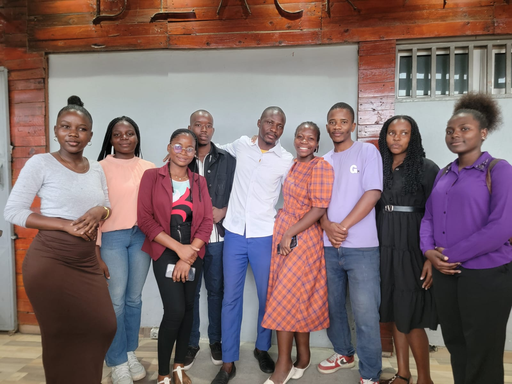

My Journey
I'm Everson Anselmo Muianga a mozambican self taugth developer, i'm 18 years old. I started my journey driven by pure curiosity and desire to understand how machines actually work, how technology can have such a positive impact in our lives.
i'm really interested in studing in the US at the course of computer science. Whith web development my main goal is to build something really significant to my countrie.
Curently i'm foccused in web developmnet as my first step into the tech world. My goal is to grow my skills, build real projects and create opportunities for my future.Main Chalendges
I guess the bigest chalendge of them all is to keep the conscistence even when you have no one to support you. Is always more hard to do the things when there is no one there cheering for you or even saying you did this wrong dont do like that do like this, but as they say life is made by the moments that no one was there to take you up, i once hurd an expression life is made by the moments where no one was there looking at you
that is what defines me.
I also had some problems with getting into some plataforms of hosting your website, buying a domain and so many other things.
This days i monstly think that to insist in programing is hard, other days i just grab myself still here just typing codes. I wanted to make something ispetacular but it won't just get the way i wanted the site to be, i guess the main chalenge in learning by myself is to keep the concistence. I guess the fact that i have to keep on moving even without any type of refun recognition, that's it.
Activities beside programming
Jornalism
I work as the maneger and creative ilustruton of the NewGen Media a space where i've colobaoratted with so many people from Mozambique.

Photo shooter
I help some business with photoshooting and other activities.
Video edditing
This is my first video eddited for NewGen media a prospective team of young jornalism entusiast in Mozambique.